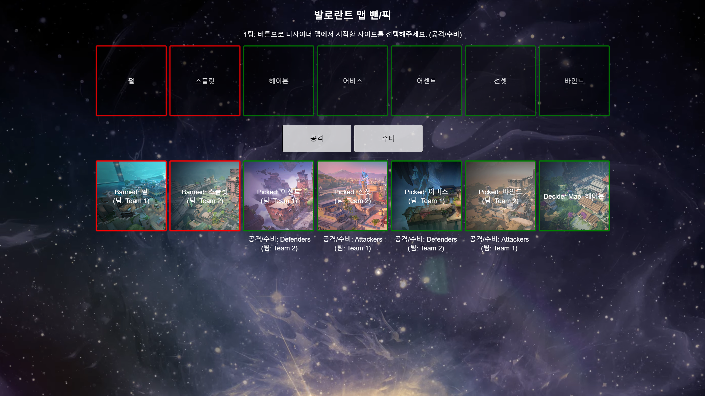

A dynamic web application built using HTML, CSS, JavaScript, Express, and Node.js for managing map bans and picks in competitive gaming environments.
This project is designed to streamline the map selection process in competitive games, where teams must choose and ban maps before a match. With this system, teams can interactively pick and ban maps in real-time, improving the competitive experience. Built with Express and Node.js for the backend, the application handles requests for map selection, ban enforcement, and dynamic updates. The frontend is styled with CSS, offering an intuitive and responsive design that allows users to easily track the current picks and bans. This project also integrates JavaScript to provide a smooth and seamless user experience, with automatic updates for all players involved in the game.
https://pickban.onrender.com/
